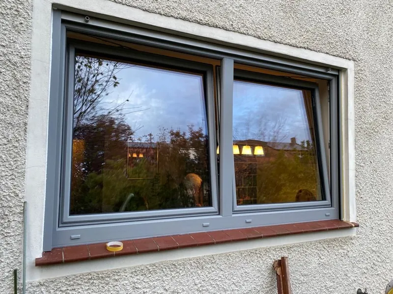
Fenster
Kunststoff, Holz und Aluminium. Zweifach oder dreifach verglast, auf Wunsch mit Schallschutz und Einbruchhemmung.
Fenster ansehen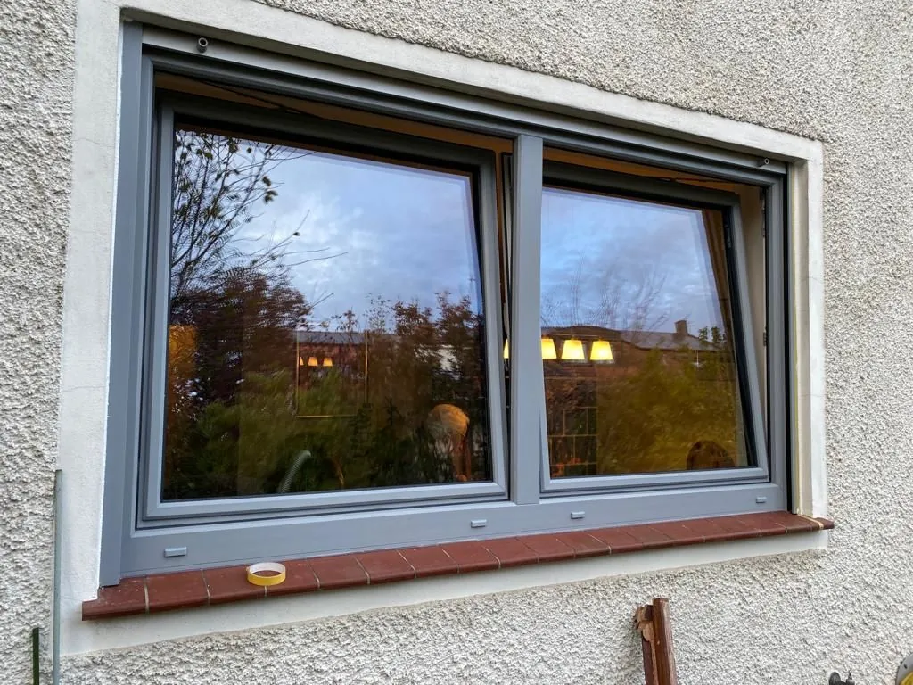
Wir liefern und montieren Fenster, Türen, Böden und Insektenschutz – in Bayerbach, im Rottal und rund um Passau. Zwei gelernte Handwerker, ein Ansprechpartner, eine saubere Baustelle.
Ein Fenster ist kein Möbelstück. Es entscheidet, wie warm, wie leise und wie sicher Sie wohnen.
Anatomie eines Fensters
Von außen sieht man einen Rahmen und eine Scheibe. Dazwischen arbeitet ein ganzes System aus Glas, Edelgas, Beschichtung und Dichtung. Jede Schicht hat eine Aufgabe – erst zusammen halten sie Kälte, Zugluft und Straßenlärm draußen.
Zeigen Sie auf eine Zeile, um die Schicht hervorzuheben. Der genaue Aufbau hängt vom gewählten System ab.
Was wir machen
Vom einzelnen Kellerfenster bis zum kompletten Haus. Wir planen, liefern, montieren und räumen auf.

Kunststoff, Holz und Aluminium. Zweifach oder dreifach verglast, auf Wunsch mit Schallschutz und Einbruchhemmung.
Fenster ansehen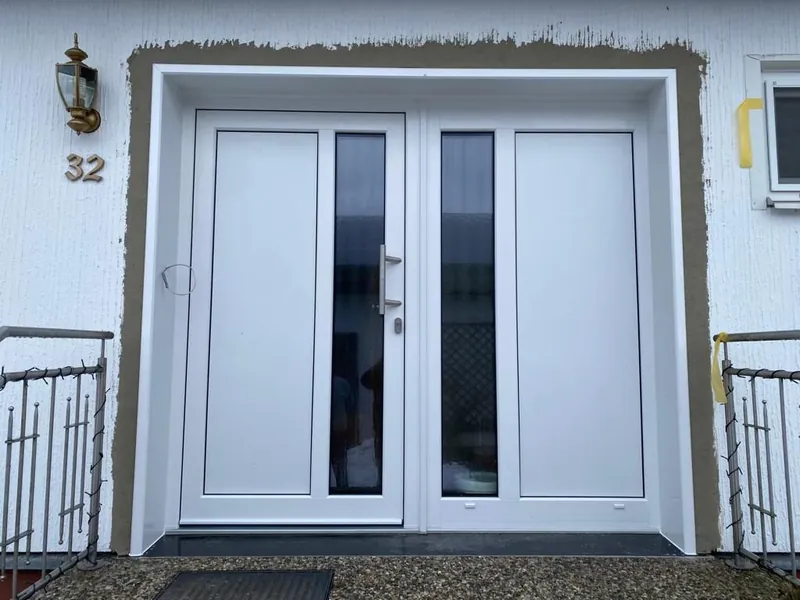
Haustüren, Wohnungseingangs- und Terrassentüren. Vom Aufmaß bis zum justierten Beschlag.
Türen ansehenLaminat, Parkett, Vinyl und Designbeläge – inklusive Untergrundprüfung und Sockelleisten.
Böden ansehenMaßgefertigte Gitter, Plissées und Rollläden. Passgenau, meist ohne Bohren in den Rahmen.
Schutz ansehenWenn beim Fenstertausch mehr zu tun ist: Laibungen, Anschlüsse, kleine Umbauten. Aus einer Hand.
Renovierung ansehenRechner
Wählen Sie, was draußen los ist und was heute im Rahmen steckt. Der Rechner zeigt, was ein neuer Aufbau bringt.
draußen → Fenster → drinnen
26 dB im Raum
Richtwert. Gerechnet wird mit dem bewerteten Schalldämm-Maß des Fensters und einem pauschalen Zuschlag von 8 Dezibel für das Verhältnis von Fensterfläche zu Raumgröße. Nach unten begrenzen wir bei 25 Dezibel, dem üblichen Grundgeräusch eines ruhigen Wohnraums. Rollladenkasten, Fassade und Lüftung wirken zusätzlich mit. Zehn Dezibel weniger nehmen wir ungefähr als halb so laut wahr. Das verbindliche Ergebnis kommt aus dem Aufmaß vor Ort.
Ablauf
Sie schildern kurz, worum es geht. Wir sagen am Telefon, ob und wann wir es machen können.
Wir messen vor Ort, prüfen den Anschluss und besprechen Material, Verglasung und Farbe. Kostenlos.
Jede Position einzeln aufgeführt: Element, Montage, Entsorgung, Anschluss. Keine Überraschungen.
Abgedeckt, sauber, termintreu. Am Ende gehen wir gemeinsam durch und justieren alles nach.
Vorher und nachher
Bei diesem Haus saßen über dem Eingang noch Glasbausteine. Heute steht dort ein schlankes Fensterelement in Anthrazit – mehr Licht, dichter Anschluss, saubere Laibung.
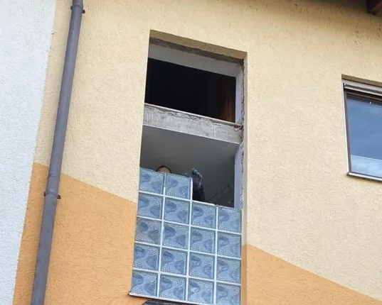
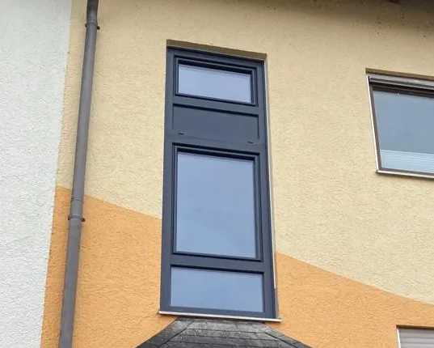
VorherNachherZahlen aus dem Betrieb. Wir schreiben hier keine erfundenen Auszeichnungen und keine erfundenen Bewertungen hin.
Rechner
Alte Fenster sind oft der größte einzelne Wärmeverlust im Haus. Schieben Sie Ihre Fensterfläche ein.
Faustwert: ein normales Wohnzimmerfenster hat rund 2 m². Ein Einfamilienhaus kommt oft auf 20 bis 30 m².
Voreingestellt ist ein Erdgaspreis. Bei Strom oder Öl den eigenen Wert eintragen.
Ersparnis im Jahr
0 Euro
Richtwert für die Transmissionswärme durch die Fensterfläche. Gerechnet mit 84 Kilokelvinstunden Heizgradstunden je Jahr und einem Anlagennutzungsgrad von 0,9. Lüftungsverluste, Sonneneintrag und Förderungen sind nicht enthalten. Wir ersetzen damit keine Energieberatung.
Aus unseren Projekten
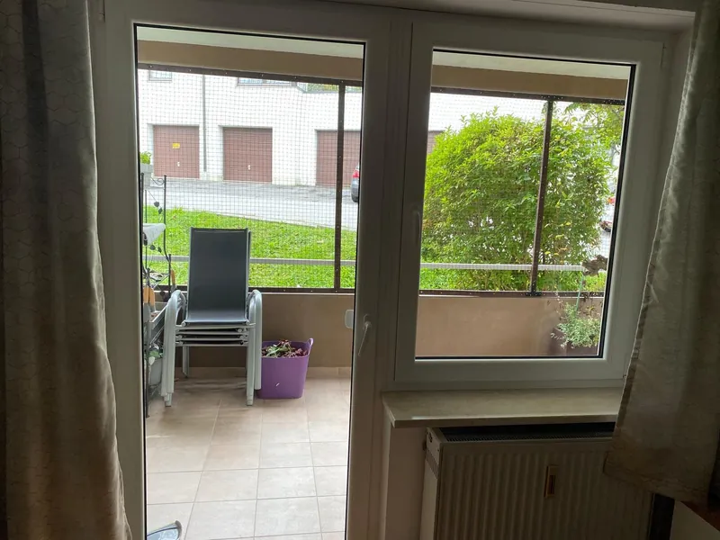
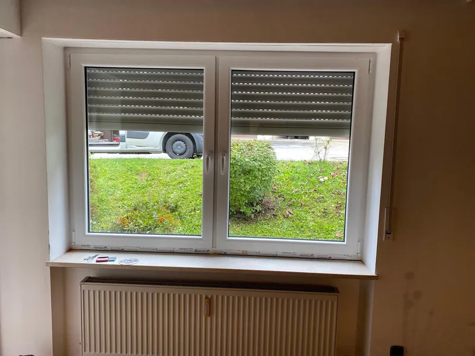
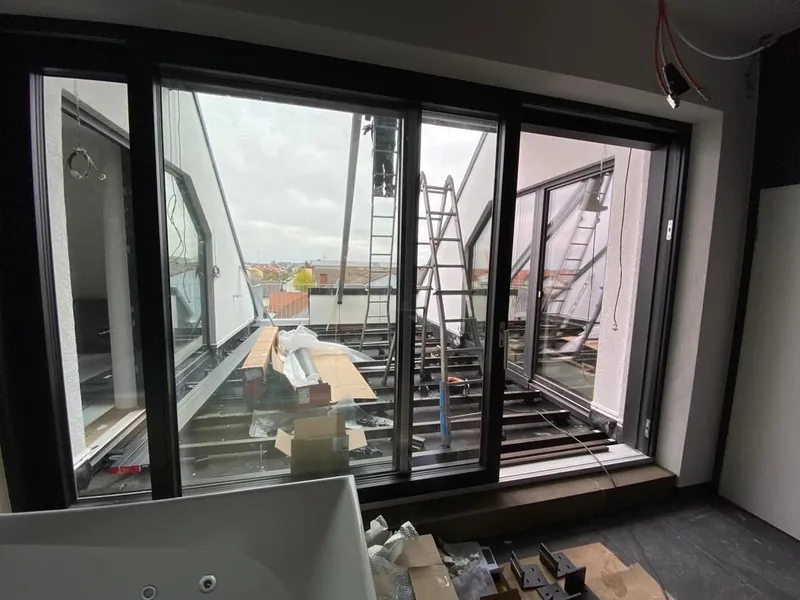
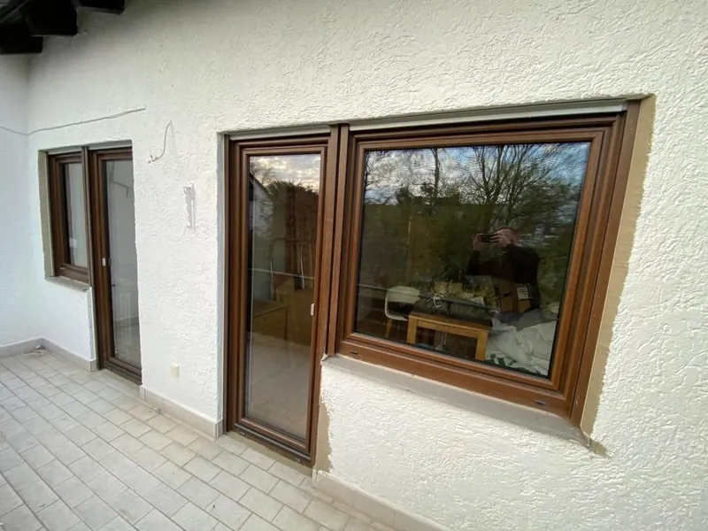
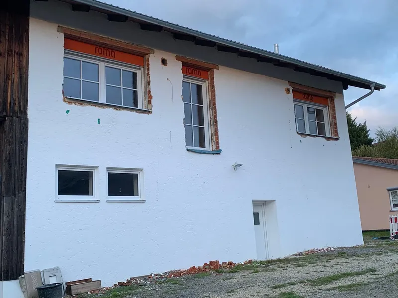
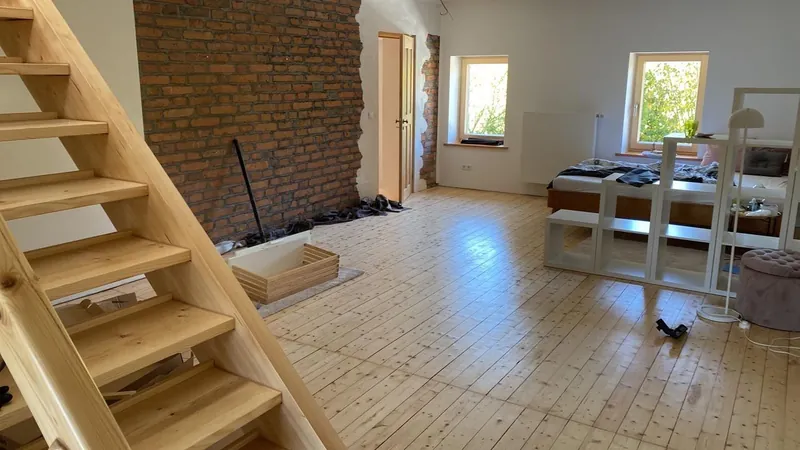
Schnellcheck
Häufige Fragen
Der nächste Schritt
Ein Termin, ein Aufmaß, ein Angebot mit Festpreis. Danach entscheiden Sie in Ruhe.